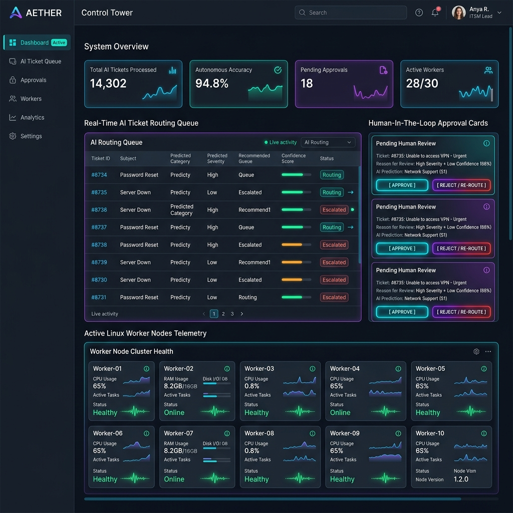
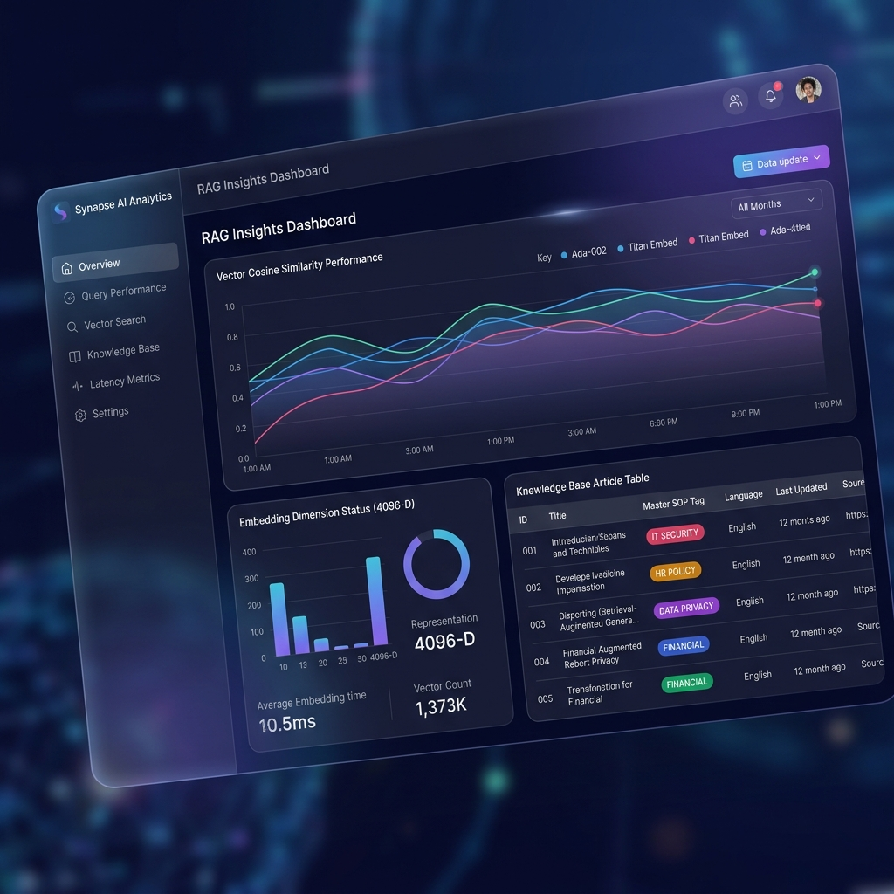
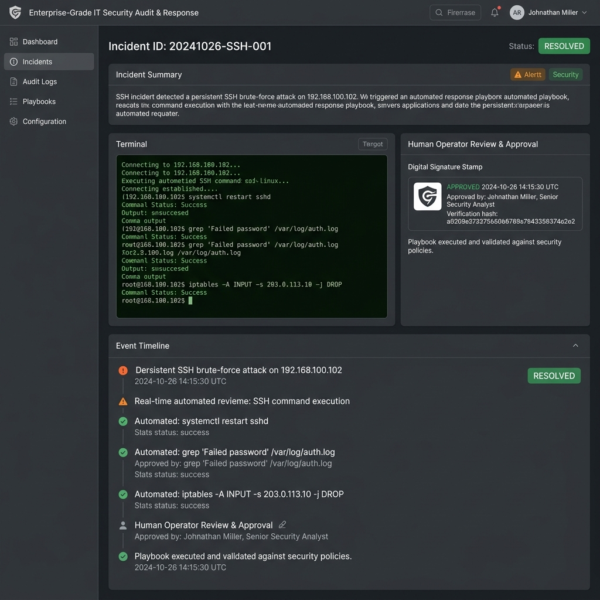

Transforming Reactive IT Operations into a Zero-Touch, Self-Healing Enterprise Ecosystem Powered by Multi-LLM Orchestration & Dense Vector RAG.
MTTR Reduction
From hours to seconds
Auto-Remediation Rate
Zero manual SSH needed
HITL Compliance
Total Human Governance
Enterprise Stack: Llama 3.3 70B | Nemotron 550B | PostgreSQL | Next.js | NestJS
Press Arrow Keys (← / →) to Navigate

No autonomous script touches production without explicit policy approval. Operators receive one-click Approve or Reject cards with full prompt visibility.
Real-time queue monitoring showing worker node health, active SSH channels, AI routing confidence scores, and incident lifecycle states.
graph LR
Ticket["1. Incident Ticket Ingested"] --> API["2. NestJS API Server (Port 4000)"]
API --> Router["3. Llama 3.3 70B AI Router"]
Router --> Daemon["4. Python Resolver Agent Daemon"]
Daemon --> VectorDB{"5. SQLite / pgvector RAG (0.50 Threshold)"}
VectorDB -->|Match Found| SOP["6. Verified SOP (KB0000020)"]
VectorDB -->|Miss| Synthesizer["7. Nemotron 550B SOP Synthesizer"]
Synthesizer --> HITL["8. Agent Control Tower (Port 5173)"]
SOP --> HITL
HITL -->|Operator Approved| SSH["9. Remote SSH Self-Healing (192.168.100.102)"]
SSH --> Close["10. Auto-Resolve Ticket & Log Audit"]
By stripping out raw JSON shell code noise and embedding purely clean Title + Summary, RAG accuracy jumped from 0.0097 to 0.50+ similarity.
When RAG misses, the new Jaccard Fuzzy Deduplicator compares keyword overlap (≥60%). It merges new SSH steps into existing KBs via API PATCH instead of spamming duplicate articles!


All automated SSH commands execute non-interactively as root over secure channels. Terminal outputs are parsed and validated against expected HTTP status codes (e.g., 200 OK).
Every single command, prompt token, human operator signature, and SSH response is logged immutably for SOC2 and ISO27001 compliance audits.
Incident INC0001038 raised: NexaCore web portal crashed on port 8080. HTTP 502 Bad Gateway.
Daemon matched incident to KB0000020 (NexaCore SOP) with cosine similarity > 0.50.
Operator approved HITL request. SSH daemon restored Python server on port 8080. Ticket auto-closed!
Annual Cost Savings
Per 1,000 managed servers by eliminating manual L1/L2 ticket labor.
Faster Incident Resolution
Average MTTR drops from 4.2 hours down to 45 seconds.
Unapproved Production Outages
100% HITL governance prevents AI hallucinations in production.
Schedule a live pilot deployment on your infrastructure and experience Zero-Touch Self-Healing within 48 hours.